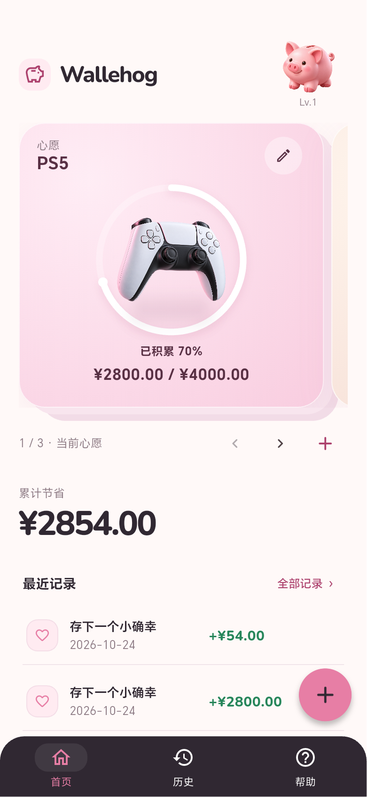
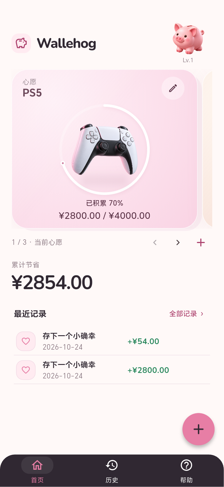

<!doctype html>
<html lang="zh-CN"><meta charset="utf-8"><meta name="viewport" content="width=device-width,initial-scale=1">
<title>Wallehog 首页 v1.5 / v1.6</title>
<style>body{margin:0;padding:28px;background:#fff9f8;color:#302832;font:16px/1.5 system-ui,sans-serif}main{max-width:1000px;margin:auto}h1{font-size:24px}p{color:#8d7b85}.comparison{display:grid;grid-template-columns:1fr 1fr;gap:24px}figure{margin:0}figcaption{margin:12px 0}img{display:block;width:100%;border-radius:20px;box-shadow:0 6px 24px #30283212}@media(max-width:600px){body{padding:16px}.comparison{gap:12px}h1{font-size:20px}}</style>
<main><h1>保留构图，精修密度与光影</h1><p>同一手机逻辑视口、相同测试数据：PS5 进度 70%，累计 ¥2854。PS5 物件尺寸保持不变。</p><div class="comparison"><figure><figcaption>之前 · v1.5</figcaption></figure><figure><figcaption>之后 · v1.6</figcaption></figure></div></main></html>
